恶魔之舞
在这场游戏里，你掌管其中一家剧团：调度表演者与烟花，把他们送去不同的演出，拍下惊艳的照片与影片，让观众沸腾，并在这场角逐中赚到最多的名气。
01游戏背景
你是一家「恶魔剧团」（colla de diables）的负责人。整场游戏围绕一次火奔（correfoc，字面意为「火焰奔流」）展开——那是剧团穿街而过的巡游：恶魔把狼牙棒上的火花洒向人群，巨兽踏着鼓点喷火，几百枚爆竹在四周炸响。
这一夜你会不断获得扬名的机会，赚取名气分（Fame Points，简称 FP）。巡游途中，观众会举起手机拍照、录像，发到社交媒体上；当队伍走进较开阔的场地，就到了焰华（lluïment）的时刻——那是巡游中的特别停顿，也是震撼全场的时机。
火奔虽然是剧团的主场，但并不是唯一能演的场合。你的剧团还可以参加轮火（carretillada）、言舞（ball parlat）、兽聚（trobada de bèsties）与鼓阵（tabalada）——每一个都是抬高名气的机会。
02配件
| 配件 | 数量 | 说明 |
|---|---|---|
| 主版图 | 1 块 | 中央版图，含 4 个演出区、时间轴、名气分轨道、声响轨道与顺位指示条 |
| 社交媒体卡 | 40 张 | 构成社交媒体墙的帖子 |
| 广告板块 | 2 块 | 少人局用来遮盖墙上格位 |
| 小兽卡 | 8 张 | 解锁第一只小兽时取 1 张 |
| 大兽卡 | 8 张 | 解锁大兽时取 1 张 |
| 焰华板块 | 6 块 | 开局抽 3 块放到时间轴上，每轮计 1 块 |
| 演出计分板块 | 16 块 | 4 种演出各 4 块 |
| 点赞标记 | 21 个 | |
| 沸腾观众标记 | 20 个 | 同一张观众卡上集满 3 个即触发 |
| 普通烟花标记 | 62 个 | |
| 哨音烟花标记 | 42 个 | |
| 彩色烟花标记 | 42 个 | |
| 街头观众卡 | 20 张 | 放在街道中央中段 |
| 时间标记 | 1 个 | 在时间轴上标示当前步骤 |
| 上人行道观众卡 | 24 张 | 街道上缘 |
| 下人行道观众卡 | 24 张 | 街道下缘 |
| 相机标记 | 24 个 | 每色 6 个 |
| 鼓手长标记 | 8 个 | 每色 2 个 |
| 「200/300」名气分标记 | 4 个 | 名气分超过 200 时使用 |
| 名气分标记 | 4 个 | 每色 1 个 |
| 声响标记 | 8 个 | 每色 2 个 |
| 追随者标记 | 16 个 | 每色 4 个，双面：计分面／已计分面 |
| 恶魔 | 40 个 | 每色 10 个 |
| 角色 | 16 个 | 每色 4 个 |
| 鼓手 | 52 个 | 每色 13 个 |
| 小兽 | 12 个 | 每色 3 个 |
| 大兽 | 4 个 | 每色 1 个 |
| 玩家版图 | 4 块 | 每色 1 块 |
| 烟花车板块 | 4 块 | 每色 1 块，放你的随身烟花 |
| 玩家辅助卡 | 1 张 |
03设置
3.1 公共设置
- A 把主版图摊在桌面中央。
- B 把 16 块演出计分板块按类型分开（4 种演出各 4 块）。版图大部分区域就是这 4 场你可以参加的演出。每种演出随机抽 1 块，正面朝上放到对应的演出区，别把板块放错演出；其余放回盒中。
- C 洗混街头观众卡，背面朝下放在版图旁。
- D 演出板块旁边就是观众聚集看演出的区域。按人数从街头观众牌堆抽卡：2／3／4 人局分别抽 12／8／4 张，并在每个观众区随机放 3／2／1 张，位置如图所示。
- E 版图左侧是时间轴，用来看整局的流程。随机抽 3 块焰华板块放到时间轴的对应格位——三格分别对应三轮，每轮计 1 块（其余放回盒中）。
- F 把时间标记放到时间轴最上面一格。
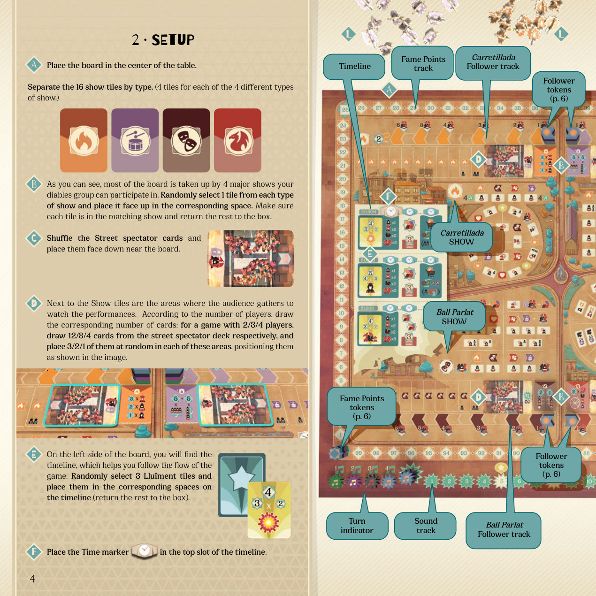
- G 版图右侧是社交媒体墙——谁也拦不住大家掏手机记录这一刻，墙上的帖子就是那些照片与影片。
- H 洗混社交媒体帖牌堆，背面朝下放在墙的最下方。若不足 4 人，从墙的最下方开始用广告盖住部分格位：3 人局盖 1 格，2 人局盖 2 格。然后在每个空格（即没有被广告盖住的格）正面朝上放 1 张帖子卡。
- I 洗混小兽牌堆，抽出玩家人数 +1 张，按对应格位放到版图上，让每张牌的下半部可见，其余放回盒中。
- J 大兽牌堆同样处理（抽人数 +1 张）。
- K 把沸腾观众标记与点赞标记在版图旁整理成公共供应区。
- L 把烟花标记分类，整理成三个储备：普通、哨音、彩色各一堆。
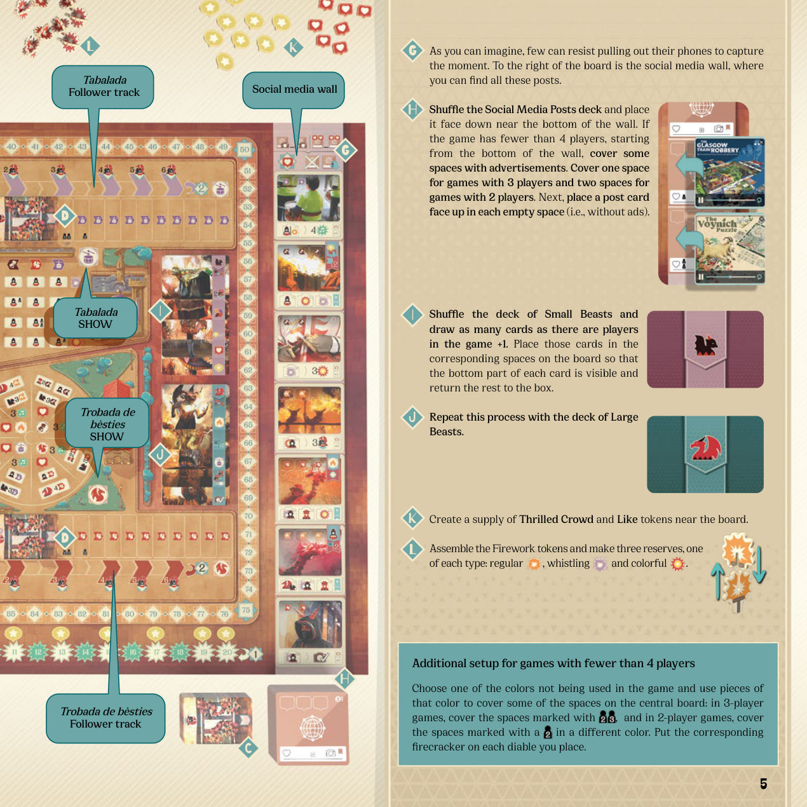
3.2 个人设置
取一块玩家版图，以及一种颜色的全部配件。个人版图上有几个用途明确的区块，从左到右最重要的是：
| 区块 | 作用 |
|---|---|
| ① 阶段提示 | 提醒一轮中各阶段的顺序。 |
| ② 剧团成员格 | 你的一部分表演者在这里等待解锁，之后才能进场。 |
| ③ 鼓手区 | 轰鸣鼓声的来源。 |
| ④ 街道 | 分为 5 列，你可以把恶魔派到这里演出。 |
- 把版图上带 ★ 的格位按图示填满：上半区放 1 个角色、2 只小兽，它们下面放 7 个恶魔；下半区放 7 个鼓手，它们下面放 1 个角色与 1 只大兽。
- 把剩下的 6 个鼓手放到鼓手区带 ★ 的格位上。
- 把剩下的 3 个恶魔、2 个角色与 1 只小兽放在版图旁，组成你的表演者储备。
- 烟花是火奔的关键，由烟花车运送。把烟花车板块放到你的游戏区，在上面放 5 枚普通、2 枚哨音、2 枚彩色烟花。
- 把你的 6 个相机标记与 2 个鼓手长标记整理成储备，放在版图旁。
在中央版图上放标记
- 把名气分（FP）标记放到名气分轨道的「0」格。
- 在 4 场主演出旁各自的追随者轨道起始格上各放 1 个追随者标记，计分面朝上（见第 4、5 页的版图示意）。
把人潮聚到街上
- 从街头观众牌堆抽 2 张，正面朝上放到你街道最左侧列的两个中央格（步骤 D 已把该牌堆放在中央版图旁）。
- 取一套图标相同的人行道观众卡（6 张上人行道 + 6 张下人行道），把其中 6 张起始卡（标 ★ 的那些）随机正面朝上放到版图对应格位：3 张上人行道卡放在版图上方那排，3 张下人行道卡放在下方那排。剩下的人行道观众卡放在你的游戏区里顺手的位置。
- 观众卡摆好后，你可以交换其中 2 张的位置，但必须是同类型（例如换两张上人行道卡，不能把上卡和下卡互换）。
- 最后，把每位玩家的 1 个声响标记随机放到顺位指示条上，另外 1 个放到声响轨道上。
3.3 少人局额外设置
2 人与 3 人局（公共部分）
选一种本局不使用的颜色，用该色配件盖住中央版图上的部分格位：3 人局盖住标有该记号的格位，2 人局则用另一种颜色盖住标有相应记号的格位。你在这些格位放的每个恶魔，都要配上对应的爆竹。
2 人与 3 人局（个人部分）
从未使用的牌堆里洗一套人行道观众卡，背面朝下放在一旁——它们会在第 7.3 节「新观众」时用到。
04游戏概览
4.1 专有名词
| 词 | 含义 |
|---|---|
| 火奔 correfoc | 传统节庆：一群人扮成恶魔与龙，在爆竹与烟花之间奔跑起舞，配以沉重的鼓声。 |
| 剧团 colla | 演出火奔的队伍。成员扮成恶魔，挥着燃烧的狼牙棒在烟花间起舞。 |
| 鼓手 tabaler | 演奏「tabal」（一种类似鼓的传统打击乐器）的乐手。鼓手通常成组行动，是火奔演出的关键。 |
| 鼓阵 tabalada | 恶魔剧团特有的打击乐演出，由为恶魔伴奏的鼓手们共同完成。 |
| 焰华 lluïments | 最盛大、最壮观的烟花表演，由恶魔们完成眼花缭乱的展示。 |
| 轮火 carretillada | 恶魔们同时点燃并施放「carretilla」（会旋转喷火的爆竹），在特定地点集中爆发。 |
| 言舞 ball parlat | 带对白的戏剧演出，由恶魔们演出，结合朗诵、幽默、讽刺与仪式，通常还有路西法（Lucifer）或女恶魔（Diablessa）等传统角色登场。 |
| 兽聚 trobada de bèsties | 各团体的巨兽聚在一起，有时还比一比谁能做出最壮观的烟花展示。 |
4.2 三轮四阶段
游戏进行 3 轮，每轮包含 4 个阶段：
- 演出：玩家轮流把可用的表演者派上街道，完成观众卡上的行动。这是每轮的主阶段。
- 时间流逝：时间标记前进，结算各项计分行动，然后补充烟花车。
- 前行：观众卡跟着巡游队伍移动，玩家同时收回表演者，供下一轮使用。
- 吸引观众：每条街道补上 3 张新的观众卡。
4.3 名气分
用名气分标记在版图上移动，记录你在游戏中赚到的 FP。若某次到达 100 FP，把标记翻面显示「100」那一侧，继续沿轨道前进；超过 200 分时改用「200」名气分标记；达到 300 FP 时把它翻到「300」那一面。
游戏过程中可能会失去名气分，但永远不会低于 0。
05阶段一：演出
本阶段中，玩家按顺位指示条上声响标记的位置决定行动顺位。轮到你时，从以下三项中选一项：① 把表演者派上街道；② 用鼓手演出；③ 跳过。
一旦某位玩家选择跳过，他在本阶段剩余时间里不能再行动。其余玩家继续轮流行动，直到所有人都跳过——此时阶段一结束，进入阶段二：时间流逝。
5.1 派遣表演者
表演者指剧团里所有不是鼓手的成员，也就是恶魔、角色与野兽。让一名表演者上场演出，就能调动你个人版图上的观众，去完成各种行动。本节讲怎么把表演者派上街、以及这场演出会激活哪些观众；各类行动怎么结算见第 6 节。
派一名表演者上场的步骤：
- 从你的储备里取 1 名表演者，放到个人版图的街道上。
街道分成若干列，每列又分为三段：上段（A）、中段（B）、下段（C）。你可以把表演者放在火力范围之内（见 5.4）、且还没有其他表演者的任意一列；该列的三个段位都可以放。但要注意：若你把人放到中段，必须压在街头观众卡上面——那些卡也摆在街道中央。
- 接着点燃烟花（见 5.2）。
- 然后激活邻近的观众，并结算对应行动（见 5.3）。
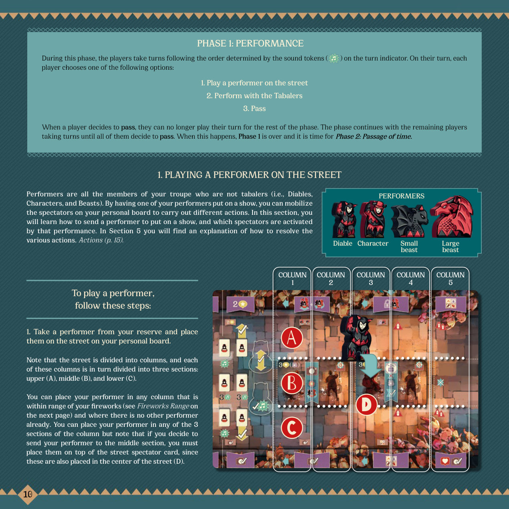
5.2 点燃烟花
剧团成员演出时会配上烟花展示，让周围观众眼花缭乱。因此把表演者派上街道时，必须从你的烟花车上取走特定数量的烟花：
| 表演者 | 需取烟花 | 说明 |
|---|---|---|
| 恶魔 | 1 枚 | 把其中 1 枚放在表演者身上，其余退回公共储备。类型可以自选，但必须全部同类型。 |
| 角色 | 2 枚 | |
| 小兽 | 3 枚 | |
| 大兽 | 4 枚 |
这些数字也印在你个人版图的提示区里。
5.3 激活观众与结算行动
个人版图上有许多可以激活的观众卡。判定「相邻」的规则是：
- 表演者放在某列中段：与它压在下面的那张观众卡相邻。
- 表演者放在上段或下段：与它正上方或正下方的观众卡相邻。
每张观众卡提供 2 个行动（印在行动框里）：
- 左侧行动：随时可做。
- 右侧行动：必须满足框上标注的条件。条件有两类——
| 条件类型 | 要求 |
|---|---|
| 表演者 | 激活这张观众卡的表演者不能是恶魔（必须是角色或野兽）。 |
| 烟花 | 激活这张观众卡的表演者身上必须带着图示类型的烟花：普通、哨音或彩色。 |
5.4 火力范围
你的烟花默认火力范围为 3：可以把表演者派到街道的前 3 列，但第 4、5 列不行（列数一律从左往右数）——爆竹还没等表演者走到就炸完了。
你可以在剧团成员格上解锁两个相应图标，永久提升火力范围：解锁第一个后可以把表演者放到第 4 列，解锁第二个后可以放到第 5 列。
5.5 剧团追随者
大多数人是站在人行道上、或者挤在街道中央看巡游的——这些由观众卡代表。但还有一部分人是剧团的铁杆粉丝，会一路跟着你走完火奔：他们就是剧团追随者，他们提供的行动直接印在你的个人版图上。
开局时，剧团追随者的许多行动被观众卡盖住、暂时不可用，但你有机会把它们揭出来。个人版图上印有提示，让你不必翻卡也知道哪些行动被压在观众卡下面。
5.6 用鼓手演出
鼓手可以擂鼓制造声响，也能为你紧邻的人行道观众打气。鼓手本来就在街上，而且从不使用烟花（他们得用手打鼓！），但总得有人指挥——所以要激活他们，你必须把一枚鼓手长标记放到鼓手旁边的一个空格上。
鼓手区有三行鼓手格。把鼓手长放在上位时，你可以激活与「你在激活图标上的那些鼓手」相邻的观众卡：
- 每个激活图标只连到观众卡的一侧，因此只能做对应的那一个行动。
- 也就是说，如果上排某个激活图标上有你的鼓手，你就可以做相邻观众卡的左侧行动；下排同理可得右侧行动——并且忽略该行动的达成条件。
- 上下两排都占满，就可以把每张相邻观众卡上的 2 个行动都做掉，顺序随意。
- 若你做的行动让你新增鼓手、从而够到了原本够不到的激活图标，也可以把那个图标对应的行动一并执行。
把鼓手长放在下位时，鼓手们就专心擂鼓：把你有鼓手的那些格位下方标的声响值全部相加，获得等量的声响点（见 5.7）。
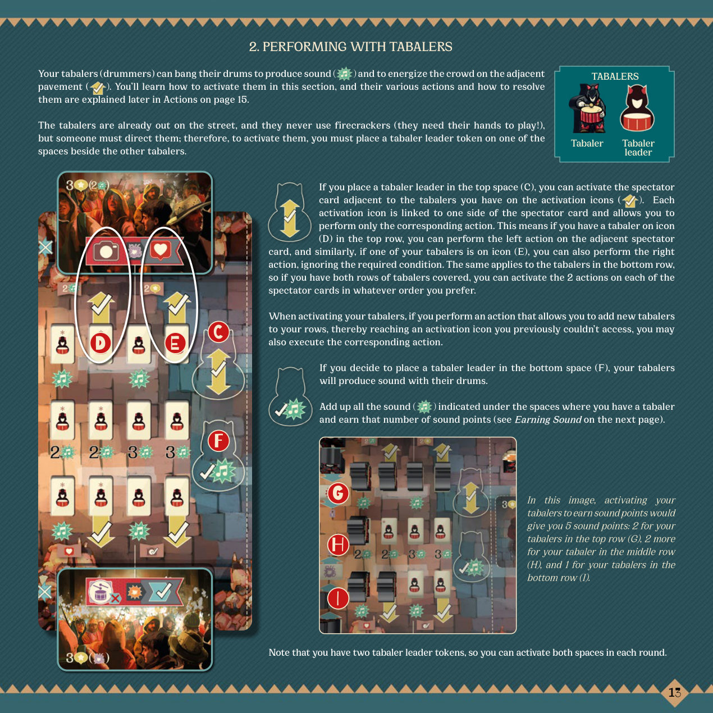
5.7 获得声响
获得若干声响点时，把你的声响标记沿声响轨道前进相应的格数。
- 若移动越过轨道最后一格，每有 1 格走不完，改得 1 FP。
- 移动过程中，声响标记每经过一个沸腾观众图标，就执行一次惊动观众行动（见 6.4）。
- 声响标记在轨道上的位置，也用来决定阶段二的新行动顺位。
5.8 跳过
选择跳过之后，本阶段剩余时间里你不能再行动。
06行动
最常见的行动来源，是用表演者与鼓手激活街道上的观众；但游戏中还有别的途径触发行动。除非图标另有说明，同一个行动无论从哪触发，结算方式都相同。所有行动都是可选的，你可以只做一部分，或干脆不做。
行动共 4 类：① 剧团行动（3 种）；② 社交媒体行动（2 种）；③ 演出行动（5 种）；④ 惊动观众行动（1 种）。
6.1 剧团行动（3 种）
剧团行动让你把表演者补进储备、扩充鼓手、提高每轮拿到的烟花数量，或获得其他好处。
整备（Preparing Performers）
把成员格上的一名剧团成员，按箭头指示的方向移动 1 格。
- 当成员像这样走到格盘尽头：如果它是表演者，加入你的表演者储备；如果是鼓手，放进鼓手区任意一行的最左格。
- 如果你没有空位放这名鼓手，就不能把它移出格盘。
- 野兽可以在第一次移动时直接移出格盘，但必须满足它的解锁条件：
- 大兽：相邻的 3 个鼓手格必须为空。
- 小兽：相邻的 2 个恶魔格必须为空。
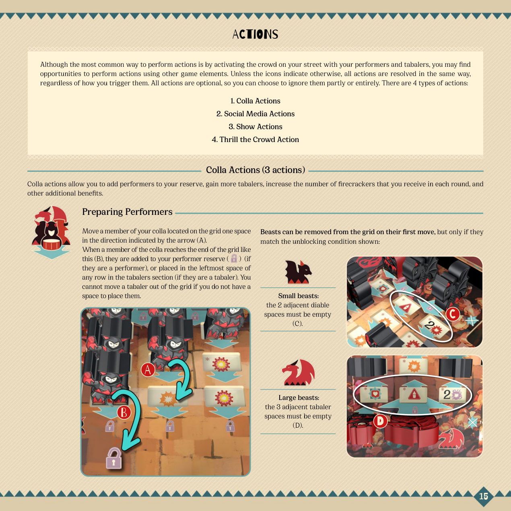
调度（Reorganizing Performers）
把格盘上的任意鼓手、恶魔或角色，移到格盘上任意一个空格——不必符合它原本的类型格。
催场（Hastening Performers）
把格盘上的任意一名剧团成员直接移入你的表演者储备；若选的是鼓手，则直接放进鼓手区的某个格位。野兽也可以选，即使你还不满足它的解锁条件。
他先用一个行动调度：把恶魔从原位挪到新位置。
接着用第一个「整备」行动，把同一个恶魔移出格盘，加入表演者储备。
第二个整备行动让他解锁了一只小兽，于是也把它放进储备。因为这是他解锁的第一只小兽，他从版图上取了一张可用的小兽卡。
兽卡
你第一次放出小兽、以及第一次放出大兽时，必须从版图上取一张对应类型的兽卡，放在街道旁。兽卡为你的野兽提供独特能力：此后每次把野兽放上街道，除了常规激活之外，还要额外激活同类型兽卡的能力（小兽的话，所有小兽都共享同一个能力）。
② 开局时你手上那只小兽没有能力，直到你解锁格盘上两只小兽中的一只为止。
6.2 社交媒体行动（2 种）
社交媒体墙展示的是观众在火奔中拍下的照片。这类行动让你成为帖子的主角，换取好处与大量名气分。
拍照／录像
墙上既有照片卡也有影片卡。照片有一个要求，写明被拍的是谁（也可能是哪只野兽！）；影片有三个要求，代表三个不同的场景。
执行这个行动时，只要触发行动的表演者或鼓手满足对应要求，你就可以出现在墙上任意一张可用照片或影片的某个场景里。例如你用「带着彩色烟花的角色」触发这个行动，那么彩色烟花要求与角色要求同时都被满足。把你储备里的一枚相机标记放到你选的那个要求上，表示它已被占用。
- 把相机标记放在照片上：立刻获得所示奖励。
- 把相机标记放在影片上：获得一项被动能力，只要这部影片还留在墙上，你就能一直享受这个加成。
获得点赞
从供应区取一枚点赞标记，放到任意一张还有空点赞位的照片或影片卡上，获得所示奖励。此外，当社交媒体墙更新时，帖子上的点赞标记会给在这张帖子上有相机标记的玩家带来名气分（见下）。
社交媒体墙的计分
在任何回合结束时，若所有社交媒体卡上都至少有一枚相机标记，或已经没有卡还有可用的点赞位，社交媒体墙就会更新：
- 每位玩家数出「至少有一枚自己相机标记的那些卡上」一共有多少枚点赞标记，再乘以自己剧团成员格上可见的社交媒体图标数量，得到名气分。
- 计分完成后（若不是第 3 轮的特殊终局计分），把所有标记收回各自储备，弃掉墙上所有社交媒体卡，并从牌堆补满新的卡。
6.3 演出行动（5 种）
中央版图上有四场你可以参加的演出：轮火、言舞、兽聚、鼓阵。它们都提供即时奖励，同时也提高你在阶段二计分时的得分机会。
参加演出，就是把一名表演者或鼓手放到对应类型的可用格位上。表演者只能从储备里出；鼓手只能从鼓手区出（取你所选那一行最右格的鼓手）。
送去演出的表演者同样要点燃烟花：派恶魔／角色／小兽／大兽时，分别从车上取 1／2／3／4 枚；其中 1 枚放在棋子身上，其余退回公共储备。
部分恶魔格与角色格上印着特定类型的烟花；把表演者放到这些格位上时，从车上取的烟花必须是该类型。
轮火（Carretillada）
在轮火里，你能拿到多种不同奖励：
- A. 放鼓手：把一名鼓手放到鼓手格，获得 4 点声响（A1）以及该格位所印的奖励（A2）。
- B. 放恶魔：把一名恶魔放到外圈的某个格位，并点燃指示的烟花，获得所占据格位两侧的奖励（B1）以及恶魔所在圆环区段内所印的奖励（B2）。
- C. 放角色：把一名角色放到内圈的某个格位，并点燃指示的烟花，获得你所放那条线两端的 2 个奖励（C1）以及角色所在两个圆环区段里的奖励（C2）。
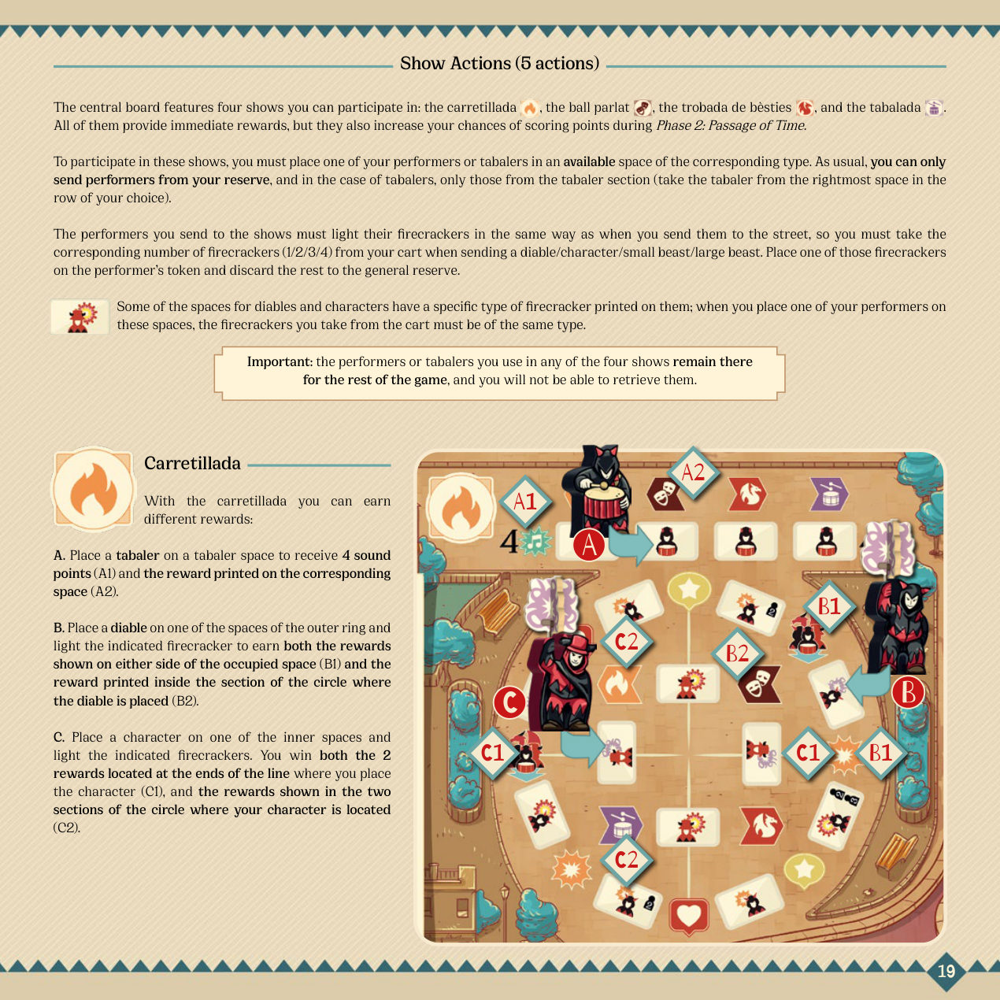
鼓阵（Tabalada）
鼓阵是能换到最多烟花的演出。把一名鼓手放到任意可用格位，立刻获得该行与列末端所印的两个奖励。
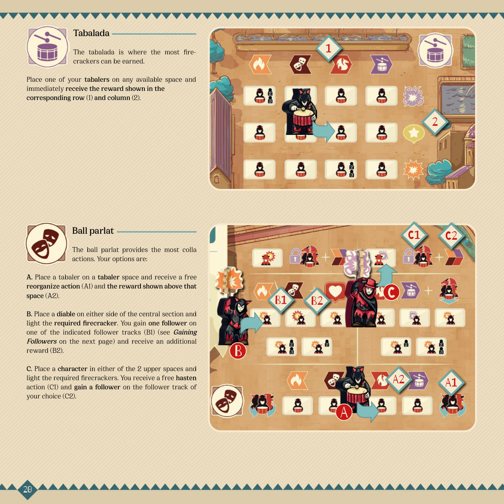
言舞（Ball Parlat）
言舞提供最多的剧团行动。你的选择是：
- A. 放鼓手：把一名鼓手放到鼓手格，获得一次免费调度行动（A1），并获得该格上方所印的奖励（A2）。
- B. 放恶魔：把一名恶魔放到中央区段的两侧之一，点燃所需烟花，在指示的某条追随者轨道上获得 1 名追随者（B1，见下文「获得追随者」），并获得一项额外奖励（B2）。
- C. 放角色：把一名角色放到上方 2 个格位之一，点燃所需烟花，获得一次免费催场行动（C1），并可在你选择的追随者轨道上获得 1 名追随者（C2）。
兽聚（Trobada de Bèsties）
兽聚是最能换来追随者的演出。把一名表演者送到对应格位，点燃你想要的烟花（但记住必须同类型！），获得表演者所在区域对应的奖励（1 个点赞或 3 点声响），并获得该格位所标的追随者数量——恶魔 1、角色 2、小兽 3、大兽 4。
注意每个象限提供的追随者属于特定的一场演出（每种演出都有自己的图标，方便辨认）。
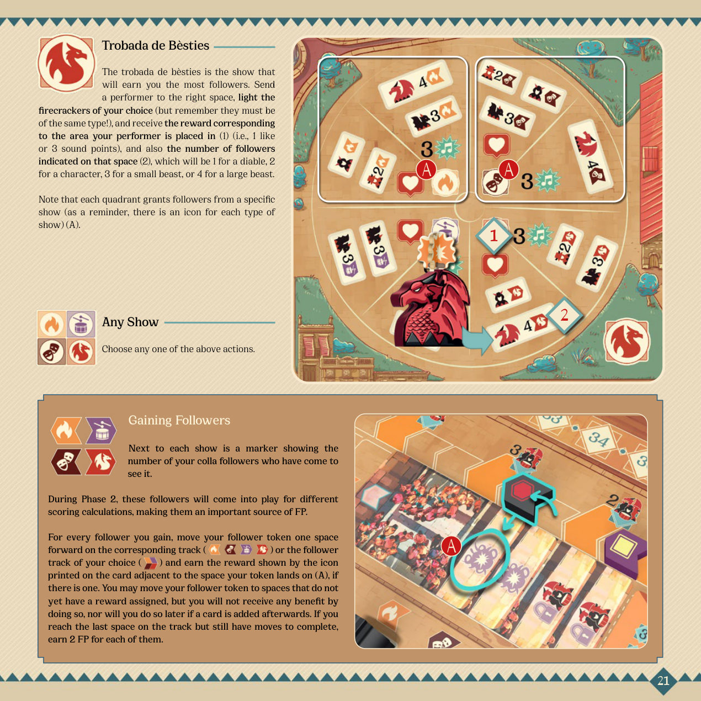
任意一场演出（Any Show）
可以从上述行动中任选一种执行。
获得追随者
每场演出旁边都有一个标记，显示你有多少剧团追随者来看这场演出。阶段二里，这些追随者会参与各项计分，是重要的名气分来源。
- 每获得 1 名追随者，把追随者标记在对应轨道（或你选择的追随者轨道）上前进 1 格。
- 若标记落点的相邻卡上印有奖励图标，就获得该奖励。
- 你可以把标记移到还没有奖励的格位上，但那样什么也拿不到；之后即使那里被放上卡，也不会补给你。
- 若走到轨道最后一格却还有步数没用完，每剩 1 步得 2 FP。
观众卡上的演出行动
观众卡上的行动通常有两个；但演出行动太强，会占满整张观众卡。具体说：
- 卡片的左侧允许你执行这场演出行动，但不能拿那些「增加追随者数量」的奖励。
- 想拿到演出行动提供的全部奖励、并增加追随者，你必须满足卡上的条件。
6.4 惊动观众
惊动观众，就是把一枚沸腾观众标记放到你街道上的任意一张观众卡上。一旦某张观众卡收到第 3 枚沸腾观众标记，就按以下步骤处理：
- 把该卡上的所有沸腾观众标记收回供应区，然后把这张观众卡从街道上移走——他们被你的剧团震住了，正赶去广场占个好位子，等着看你们最精彩的表演。
- 把刚移走的观众卡翻面，放到 4 块演出计分板块中任意一场旁边的第一个可用格位，按图示方向摆好。观众卡背面印有图标，指明下一张观众卡该放到哪一场。放好之后，把你的追随者标记在该轨道上前进 1 格，并获得对应奖励（即标记落点相邻的图标所代表的奖励，不一定是刚放上去那张卡上的）。若版图上已没有可用格位放这张观众卡，就把它弃掉。
② 移走人行道观众卡后，你个人版图上印在那一格的剧团追随者行动就会变得可用，直到阶段三有新卡盖上来为止。
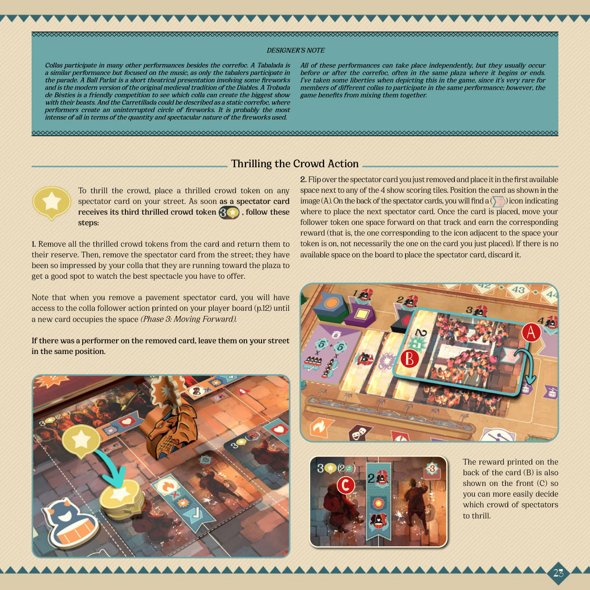
07阶段二：时间流逝
所有玩家都选择跳过之后，按时间轴上当前轮标示的步骤，从左到右、由全体同时执行，并用时间标记标示正在做哪一步。
这些步骤包括：
- 焰华板块计分。
- 演出、街头观众与社交媒体墙计分。
- 补充烟花车并调整行动顺位。
- 把时间标记移到下一条时间轴的开头——除非你已经在第 3 轮（最后一轮）。
7.1 焰华板块计分
时间轴上每轮放 1 块焰华板块，本轮就结算这一块。焰华板块给出一个条件（某个棋子类型，或某种烟花），以及 3 档名气分奖励。每位玩家清点自己在整个广场（也就是 4 场演出里）拥有的、符合该条件的元素数量。清点时要注意：
- 角色、小兽以及它们身上的烟花算双倍；
- 大兽及其烟花算三倍。
数量最多的玩家（并列者同样算）用该数量乘以板块上最高那档奖励；数量第二多的玩家乘以第二档；其余玩家乘以最低档。
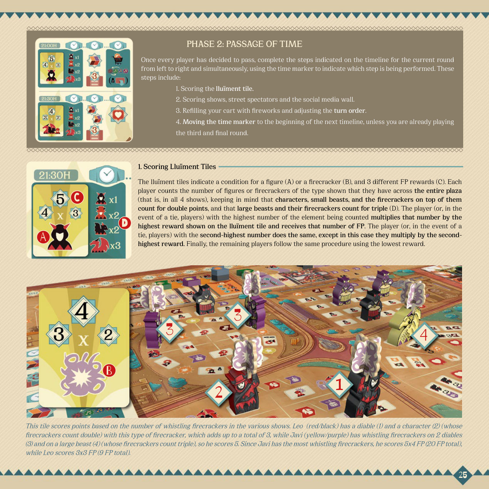
7.2 演出与观众
7.2a 演出计分
前两轮：每位玩家从四场演出中选 1 场计分——前提是那场演出旁自己的追随者标记还显示计分面（表示尚未计过分）。第 3 轮：每位玩家给自己前两轮没有选过的那两场演出计分。
给一场演出计分时，看你的追随者标记在该轨道上的位置与轨道上印的图标：你到达或越过的最后一个图标，决定你能给几个棋子计分。
- 每有一个可计分名额，就从该演出里挑一个你的棋子，按这场演出的计分板块条件给它计分（各板块的细则见附录 D）。
- 同一个棋子不能计两次——即使标记允许你计的数量超过你实际拥有的棋子。
- 计分完成后，把追随者标记翻到已计分面，表示这场你已经计过分、后续轮次不能再计；但这不影响你继续通过前进获得常规奖励。
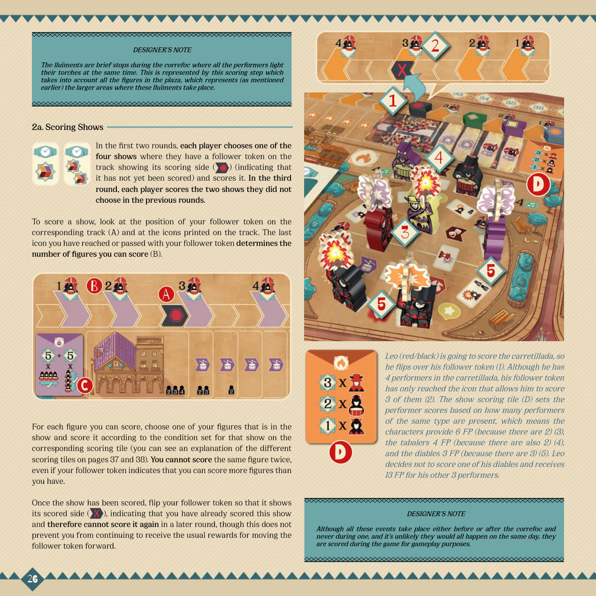
7.2b 街头观众罚分
你街道上每有一张上面没有表演者的街头观众卡，就失去 3 FP。
7.2c 终局社交媒体计分（仅第 3 轮）
这是独立于常规计分之外的额外一步，只在最后一轮执行，算法与 6.2「社交媒体墙的计分」第 1 步相同。
7.3 收尾三事
7.3a 补充烟花车
获得你剧团成员格上空格所印的烟花：从储备取对应数量，放进你的烟花车。
7.3b 调整行动顺位
按声响标记在声响轨道上的位置重排顺位：走得最远的玩家在新顺位中先行动，第二远的第二个，依此类推。
出现并列时，并列者之间的相对顺序反转：例如原本第 3、第 4 顺位的两人在新的顺位里并列第一，则由原本第 4 的那位先走，原本第 3 的随后。
新顺位确定后，把所有声响标记退回声响轨道的起始格。
7.3c 新观众（仅少人局特定轮次）
2／3 人局的第 1 轮：从设置时放在一旁的那叠人行道观众牌堆取最上面 4 张，随机各放 1 张到 4 块演出计分板块旁，盖住下一个可用格位——这样每场演出都会收到一张新卡。2 人局在第 2 轮再做一次。
7.4 移动时间标记
把时间标记移到下一条时间轴的开头——除非你已经在第 3 轮（最后一轮）。
08阶段三：前行 · 阶段四：吸引观众
阶段三：前行（全体同时执行）
所有玩家同时完成这个阶段：
- 把街道上表演者携带的烟花退回公共储备。
- 把这些表演者与鼓手长收回个人储备，下一轮可以再用。
- 把街头观众卡向右移 1 格，把人行道观众卡向左移 1 格。
- 最右格的街头观众卡会超出板外；最左格的人行道观众卡则与鼓手区同列。若某张卡已经处在上述这两个位置之一，就把它移出游戏。
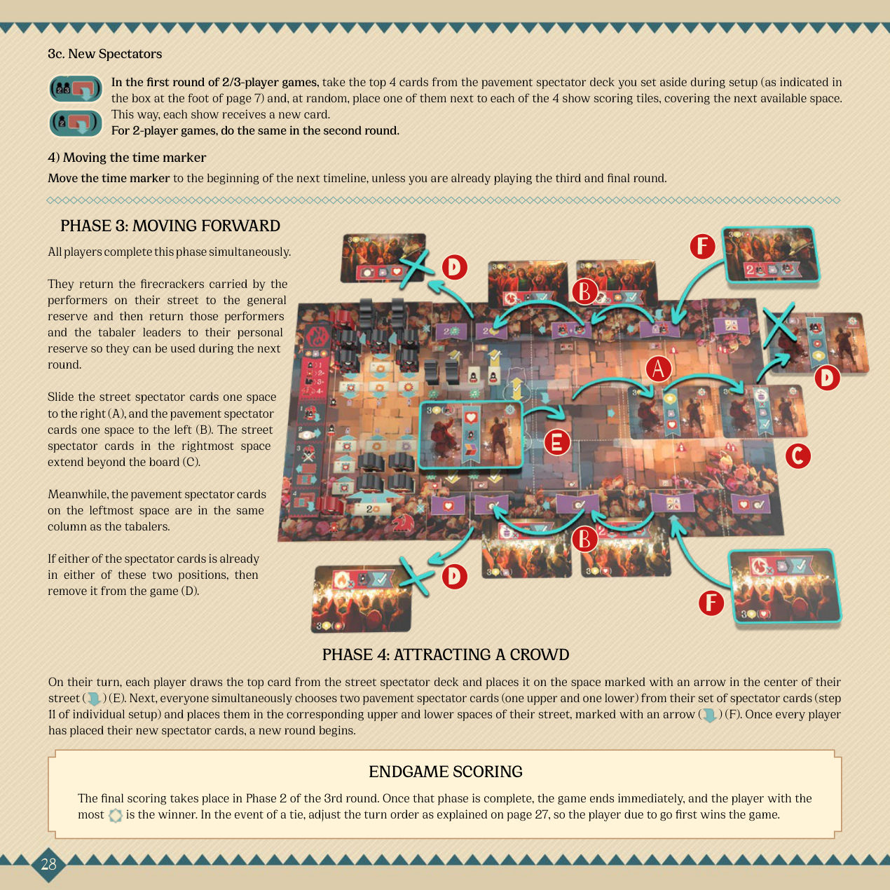
阶段四：吸引观众
按顺位，每位玩家从街头观众牌堆抽最上面 1 张，放到自己街道中央标有箭头的格位上。随后，所有人同时从自己的那套观众卡里选 2 张人行道观众卡（1 张上、1 张下），放到街道上下标有箭头的格位。
等所有人都放好新卡，新一轮就开始了。
09终局与计分
终局计分发生在第 3 轮的阶段二。该阶段一结束，游戏立即结束，名气分最多的玩家获胜。
若出现平手，按 7.3b 的方法重排顺位——按新顺位本应先行动的那位玩家获胜。
10单人模式：火械
单人局里，你的对手是火械（Firebot）。按 2 人局设置游戏，但要做以下改动。
10.1 设置
- 你先手。
- 火械不拿玩家版图、鼓手长标记与烟花。它的其余配件放在游戏区顺手的位置，构成火械储备。
- 从分配给火械的 12 张人行道观众卡里，把带剧团行动的 2 张挑出来放到一边。剩下的 10 张洗混，背面朝下放在火械储备旁——这是火械决策牌堆。
- 从街头观众牌堆抽 4 张，与第 3 步放在一边的 2 张人行道卡洗混。把这 6 张背面朝下放在决策牌堆旁——这是火械追随者牌堆。
- 把火械的大兽放到时间轴上第 2 轮的第一格。
- 看社交媒体墙最上面那张帖子的点赞奖励指向哪场演出；把火械的一只小兽放到那条演出的追随者轨道旁。这只兽就是火械的指定标记，用来标示它偏好的追随者轨道。
- 执行公共设置的 I、J 两步时，只用2 张小兽卡与2 张大兽卡。
- 从简单／普通／困难／极难／魔鬼级中选定难度。
10.2 火械的行动次数
单人局中你照常进行自己的回合。除非另有说明，火械也遵循普通规则。它需要烟花时直接从公共储备取（可视为烟花无限）；需要把表演者送去演出时，直接从储备取（可视为全部已解锁）。
阶段一中，火械的回合是：从决策牌堆翻开最上面一张，把该卡翻面，执行上面显示的行动。做完，火械的回合结束，又轮到你。
火械每一轮能行动几次，取决于轮次与所选难度：
| 难度 | 第 1 轮 | 第 2 轮 | 第 3 轮 |
|---|---|---|---|
| 简单 | 3 次 | 3 次 | 4 次 |
| 普通 | 3 次 | 4 次 | 5 次 |
| 困难 | 4 次 | 5 次 | 5 次 |
| 极难 | 4 次 | 5 次 | 6 次 |
| 魔鬼级 | 5 次 | 5 次 | 6 次 |
随着你翻开火械的卡，把它们摊在桌上，方便看清它已经行动了几次。某一轮里，你的行动次数可以多于火械——和多人局一样。
10.3 火械的演出行动
当火械需要执行演出行动（无论是决策卡上写着，还是其他原因触发）时，它从储备里派出一名表演者或鼓手，并遵守所有关于棋子类型与烟花类型的放置规则。
在选择「放哪个棋子、放到哪」时，火械按以下优先级判断：
- 选能推进它偏好追随者标记的格位。若符合的格位不止一个，则在这些之中：
- 按尚未计分的焰华所对应的表演者／鼓手类型或烟花类型来选。若仍不止一个，则在这些之中：
- 选能放下需要最多烟花的表演者的格位。若仍不止一个，则：
- 由你决定格位，必要时也由你决定用哪种烟花。
随后火械按常规领取全部奖励：先领不涉及追随者轨道前进的那些，再领会推进追随者标记的那些。
偏好追随者轨道
火械的偏好轨道，就是它指定标记所在的那条。若没有任何选项能推进那条轨道，就选能推进顺时针方向下一条未计分轨道的选项。放社交媒体点赞时判断偏好轨道，也用同一套办法。
每次火械完成一次演出行动，检查同场演出是否尚未计分、且它在该场的表演者与鼓手数量最多（不与任何其他未计分演出并列）；若成立，就把指定标记移到那条轨道。每次演出计分之后，指定标记同样会换位置。
未计分的焰华
火械会尽量挑选能让自己拿到第一块未计分焰华（最上面那块）的棋子与烟花。若没有任何选项满足这一点，就按下面的焰华（始终从上到下）依次检查条件，从中选出同时满足那些条件的选项。
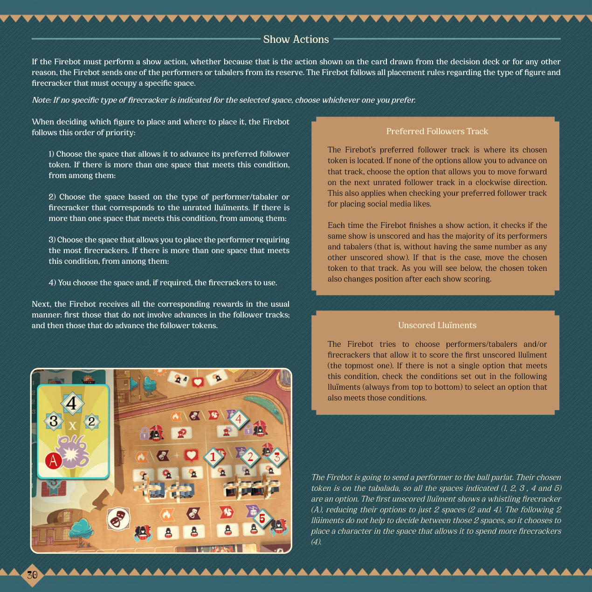
10.4 火械的社交媒体行动
拍照／录像
火械按以下规则决定把相机标记放在哪：
- 点赞最多的帖子卡。若不止一个，则：
- 优先照片卡而非影片卡。若不止一个，则：
- 墙上位置更靠上的那张。
火械绝不在自己已有相机标记的影片上再放标记；往影片上放标记时，一律放在最右侧的可用位置。火械忽略所有带相机标记的影片卡的被动能力，但照片卡的奖励照常领取。
获得点赞
火械获得点赞时，按以下规则决定放在哪：
- 放在有自己相机标记的卡上。若不止一个，则：
- 放在没有自己相机标记的卡上。若不止一个，则：
- 放在能推进它偏好追随者轨道的点赞位上（若那条轨道推不动，就选顺时针下一条未计分轨道）。若不止一个，则：
- 墙上最靠上的那张卡。
放点赞的奖励照常领取。若已没有空格可放点赞标记，火械就不做这个行动。
社交媒体计分
火械按常规结算社交媒体墙，其「可见社交媒体图标数」在第 1／2／3 轮分别视为 2／5／8。
社交媒体行动的组合
若火械翻到的卡同时显示「拍照／录像」与「点赞」，它会按这个顺序把两个行动都做。若你选了极难或魔鬼级，火械会把「拍照／录像」做 2 次（也就是放第二枚相机标记）——只要条件允许。
10.5 火械的其他行动
- 每次火械需要执行剧团行动，改为在相应位置放 1 枚点赞标记；若该剧团行动带数字，就放同样数量的点赞标记。
- 每次火械赢得1 枚或更多烟花，每枚改得 2 点声响。
- 火械赢得惊动观众行动时，把 1 枚沸腾观众标记放到观众牌堆顶上。每次它放上第 3 枚，就把这 3 枚退回公共储备，并把观众牌堆最上面一张卡放到它偏好追随者轨道旁的下一个可用格位，按常规获得前进。
10.6 阶段二：火械的计分
火械给焰华计分的方式与常规相同。给演出计分时，它选指定标记所在的那场；到第 3 轮则给仍未计分的那两场计分。
火械忽略演出计分板块上的条件，改按以下步骤结算：
- 数它在该场演出里的表演者／鼓手棋子数量；
- 把这个数量乘以 2；
- 再乘以它在该场追随者轨道上到达或越过的最后一个计分图标的数值。
火械获得该乘积的名气分。随后把指定标记移到它棋子最多的未计分演出；若并列，按顺时针方向移到并列中的下一场。
火械从不因街头观众卡失分，也从不补充烟花车。第 1 轮结束时，把大兽加入它的储备。
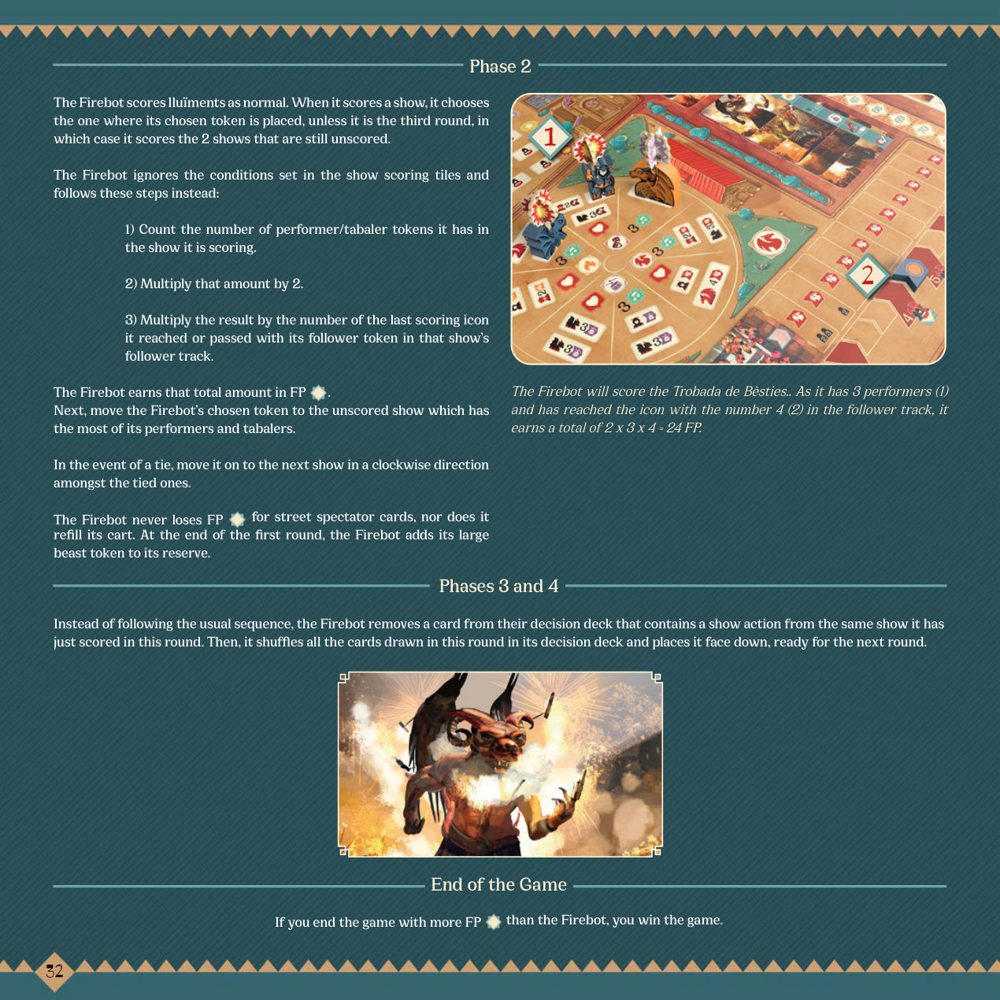
10.7 阶段三、阶段四与终局
阶段三与阶段四：火械不按常规顺序执行，而是从决策牌堆里移走一张「本轮它刚计分的那场演出」的演出行动卡，然后把本轮抽出的所有卡洗回决策牌堆，背面朝下放好，准备下一轮。
游戏结束：终局时你的名气分高于火械，你就获胜。
A附录：图标速查
游戏中出现的图标与对应含义。按原书版面顺序排列。
| # | 图标含义 |
|---|---|
| 1 | 要执行此行动，相邻的表演者不能是恶魔。 |
| 2 | 要执行此行动，相邻的表演者必须点燃所示的烟花。 |
| 3 | 按图示次数，对剧团成员格上的成员执行相应次数的移动（整备）。 |
| 4 | 把剧团成员格上的任意一名成员（野兽除外）移到格盘上的另一个空格（调度）。 |
| 5 | 把剧团成员格上的任意一名成员加入你的储备，包括不满足解锁条件的野兽（催场）。 |
| 6 | 给触发此行动的表演者或鼓手拍照或录像。 |
| 7 | 给触发此行动的表演者或鼓手拍照或录像，并忽略该照片／影片的要求。 |
| 8 | 在社交媒体墙的帖子上放 1 枚点赞标记，获得所示奖励。 |
| 9 | 把一名表演者或鼓手送去所示演出。 |
| 10 | 把一名表演者或鼓手送去所示演出，但除非满足设定条件，否则不获得追随者。 |
| 11 | 把一名表演者或鼓手送去任意一场演出。 |
| 12 | 在所示演出上获得 1 名追随者。 |
| 13 | 在任意演出上获得 1 名追随者。 |
| 14 | 获得所示数量的声响点。 |
| 15 | 激活鼓手时，可以执行相应的行动。 |
| 16 | 按图示执行相应次数的惊动观众行动（可以分散在不同观众卡上）。 |
| 17 | 获得所示数量的烟花。 |
| 18 | 要把表演者放到此格位，必须点燃所示的烟花。 |
| 19 | 获得所示数量的名气分。 |
| 20 | 可见的社交媒体图标会提高你的社交媒体得分。 |
| 21 | 提高你的烟花火力范围。 |
B附录：拍照奖励
社交媒体要求
照片与影片上印的要求，指明「触发该行动的剧团成员必须是谁／带着什么」。共有 8 种：
| # | 要求 |
|---|---|
| 1 | 必须是带哨音烟花的恶魔。 |
| 2 | 必须是带彩色烟花的恶魔。 |
| 3 | 必须是角色。 |
| 4 | 必须带哨音烟花。 |
| 5 | 必须带彩色烟花。 |
| 6 | 必须带普通烟花，或者是鼓手。 |
| 7 | 必须是鼓手。 |
| 8 | 必须是野兽。 |
拍照奖励通则
大多数拍照奖励都收录在附录 A 的图标速查里，下面两条需要额外说明。另外有一条通则：奖励旁的数字表示该奖励可以领取几次。
| 奖励 | 效果 |
|---|---|
| 3 | 在任意另一张帖子上放第二枚相机标记，忽略该帖的要求；放好时，获得这张照片对应的奖励。 |
| 20 | 把一名表演者／鼓手送去所示演出，并立即按该演出计分板块的条件给它计分。 若此效果由火械结算，则把该演出追随者轨道上到达或越过的最后一个计分图标数值乘以 2，得该数量的名气分。 |
C附录：录像奖励
影片卡提供的被动能力（编号 21–40），只要影片还留在墙上就持续有效。
| # | 能力 |
|---|---|
| 21 | 通过鼓手赢得一个行动时，可以把该行动执行两次（而非一次）。 |
| 22 | 获得拍照奖励时，拿两次。 |
| 23 | 获得一次或多次整备行动（剧团成员）时，按图示次数拿双倍。 |
| 24 | 你送去街道或演出的表演者，无论什么类型，只需点燃 1 枚烟花。 |
| 25 | 把鼓手长放在下位时，你街道上的每个鼓手额外提供 1 点声响。 |
| 26 | 在广场放上沸腾观众（即移走一张观众卡）时，相应追随者轨道上的标记额外前进 2 格。 |
| 27 | 把剧团成员放进轮火时，立即按该演出计分板块的条件给它计分。 |
| 28 | 把剧团成员放进言舞时，立即按该演出计分板块的条件给它计分。 |
| 29 | 执行演出行动时，可以选任意一场演出。 |
| 30 | 执行「获得追随者」行动时，可以把追随者加到你选择的演出上。 |
| 31 | 使用「非恶魔剧团成员」的要求，一律视为已满足。 |
| 32 | 把剧团成员放进鼓阵时，立即按该演出计分板块的条件给它计分。 |
| 33 | 在广场放上沸腾观众时，除追随者前进所得的奖励外，额外获得该观众卡上所印的奖励。 |
| 34 | 把剧团成员放进兽聚时，立即按该演出计分板块的条件给它计分。 |
| 35 | 每轮一次，你可以把表演者放到已有其他表演者的列，但必须放在不同的段位。此效果可与提供同样能力的野兽叠加。 |
| 36 | 获得「需要使用非恶魔剧团成员」的奖励时，拿双倍。若该奖励是某场演出的追随者，则只把追随者数量翻倍，演出其他奖励不翻倍。 |
| 37 | 把鼓手长放在上位时，即使鼓手没有站在对应激活图标上，也可以执行鼓手相邻的 4 个行动。 |
| 38 | 获得点赞奖励时，按图示数量拿双倍。 |
| 39 | 给焰华板块计分、计算要计分的元素数量时，该数量 +2。 |
| 40 | 从剧团追随者获得奖励时，拿双倍。 |
D附录：演出计分板块
通用规则
- 你只能计数量不超过「你在追随者轨道上到达或越过的图标数值」的棋子。
- 每个棋子单独评估：即使同在一场演出，不同棋子也可能因条件不同而得到不同分数。
- 所有计分只涉及你正在计分的那场演出里的棋子与烟花。
- 多数可以共享：数量并列的玩家同样算拥有多数。评估烟花多数时，演出里每枚烟花都算 1，不论由谁携带。
- 当计分规则提到「每个棋子」时，所有棋子都计入，不论属于谁——包括 2–3 人局中不属于任何玩家的棋子。
- 「对面」的定义：
- 言舞、以及轮火里的鼓手格：指水平对面的格位（把两处格位看成镜像的两半，对面就是该格位的镜像）。
- 兽聚、以及轮火里其余格位：指圆环上相差 180° 的那个格位。
- 言舞板块被分成两个相同的半区。
焰华板块（6 块）
| # | 计分条件 |
|---|---|
| 1 | 广场上你每有 1 枚普通烟花，得 4／3／2 FP。放在角色或小兽身上的烟花算双倍，放在大兽身上的算三倍。 |
| 2 | 广场上你每有 1 枚哨音烟花，得 4／3／2 FP（双倍／三倍同上）。 |
| 3 | 广场上你每有 1 枚彩色烟花，得 4／3／2 FP（双倍／三倍同上）。 |
| 4 | 广场上你每有 1 个恶魔，得 5／4／3 FP。 |
| 5 | 广场上你每有 1 个鼓手，得 5／4／3 FP。 |
| 6 | 广场上你每有 1 个角色和／或野兽，得 4／3／2 FP。角色与小兽算双倍，大兽算三倍。 |
「4／3／2」这类写法，对应第 7.1 节的三档：数量最多者用最高档、第二多用第二档、其余用最低档。
轮火（4 块）
| # | 计分条件 |
|---|---|
| 1 | 你每有 1 个角色，得 3 FP（按轮火里角色的总数算）；每有 1 个鼓手得 2 FP；每有 1 个恶魔得 1 FP。 |
| 2 | 若你拥有「你正在计分的表演者所用烟花类型」的多数（若计分对象是鼓手，则改为「拥有最多鼓手」），得 8 FP；否则得 4 FP。 |
| 3 | 你的每个棋子，按与它同一象限里的棋子数量计，每个 2 FP。鼓手归入「与它共享同一追随者奖励」的那个象限；角色横跨两个象限，因此两个象限的计分里都算它。 |
| 4 | 若你正在计分的棋子对面格位上有其他颜色的棋子，得 4 FP；若有你自己的棋子，得 8 FP。 |
言舞（4 块）
| # | 计分条件 |
|---|---|
| 1 | 若你正在计分的棋子位于棋子较少的那一半（并列也算少），它按该半区每个棋子 2 FP 计；否则按它所在半区每个棋子 1 FP 计。 |
| 2 | 若你拥有「你正在计分的类型」的最多棋子，得 8 FP；否则得 4 FP。 |
| 3 | 对面格位上有其他颜色的棋子，得 4 FP；有你自己的棋子，得 8 FP。 |
| 4 | 在棋子较少的一半，得 3 FP；在较多的一半，得 6 FP；两半数量相同，得 9 FP。 |
兽聚（4 块）
| # | 计分条件 |
|---|---|
| 1 | 找出「你有至少一个棋子的相邻扇区」中最大的那一组；你的每个棋子得 2 FP × 该组扇区数量。 |
| 2 | 对面扇区上有其他颜色的棋子，得 4 FP；若对面扇区至少有你一个棋子，改得 8 FP。 |
| 3 | 你的每个棋子，按「与它共享同一追随者奖励的那两个扇区」里的棋子数量计，每个 3 FP。 |
| 4 | 若你拥有「与你正在计分的表演者所用烟花同类型」的多数，得 8 FP；否则得 4 FP。 |
鼓阵（4 块）
| # | 计分条件 |
|---|---|
| 1 | 你正在计分的鼓手所在的每一行或每一列，只要是完整填满的，就得 5 + 5 FP（行与列分别计算）。 |
| 2 | 若你拥有「你正在计分的鼓手所在列」的最多鼓手，得 8 FP；否则得 4 FP。 |
| 3 | 计分某个鼓手时，把与它正交相邻的所有鼓手都算进来；计入的鼓手每有一种不同颜色，得 3 FP。 |
| 4 | 计分某个鼓手时，找出你「彼此正交相邻的最大鼓手群」（含正在计分的那个）；群内每个鼓手得 2 FP。 |
E附录：兽卡
小兽卡与大兽卡各 8 张。解锁第一只小兽／大兽时各取 1 张；此后每次把同类野兽放上街道，都要额外激活该卡能力。
小兽（8 张）
| # | 能力 |
|---|---|
| 1 | 把此兽放上街道时，对一张观众卡使用 1 枚沸腾观众标记（即执行一次惊动观众）。 |
| 2 | 把此兽放上街道时，获得 1 个点赞。 |
| 3 | 把此兽放上街道时，立即按对应板块条件，给你本轮送去演出的任意棋子计分。 |
| 4 | 把此兽放上街道时，在任意演出上获得 1 名追随者。 |
| 5 | 把此兽放上街道时，执行 2 次整备行动（剧团成员）。 |
| 6 | 把此兽放上街道时，获得 3 点声响。 |
| 7 | 把此兽放上街道时，获得正在被激活的那张观众卡「惊动观众面」的奖励。 |
| 8 | 把此兽放上街道时，执行一次调度行动（剧团成员）。 |
大兽（8 张）
| # | 能力 |
|---|---|
| 1 | 把此兽放上街道时，拍照或录像，并忽略该照片／影片的要求。 |
| 2 | 可以把此兽放到已有其他表演者的列，但必须放在不同的段位。 |
| 3 | 把此兽放上街道时，把相邻的观众卡激活两次（而非一次）。 |
| 4 | 把此兽放上街道时，执行一次催场行动。 |
| 5 | 把此兽放上街道时，把一名表演者或鼓手送去轮火。 |
| 6 | 把此兽放上街道时，把一名表演者或鼓手送去言舞。 |
| 7 | 把此兽放上街道时，把一名表演者或鼓手送去兽聚。 |
| 8 | 把此兽放上街道时，把一名表演者或鼓手送去鼓阵。 |
F制作名单
致谢：作者与出版社感谢 Teresa Miret dels Carranquers de Cervera 在「恶魔之舞」资料研究上的协助。
© 2026 Salt and Pepper Games，C/ Jorge Juan 42, Madrid 28001, Spain。版权所有。更多信息见 www.saltandpeppergames.es